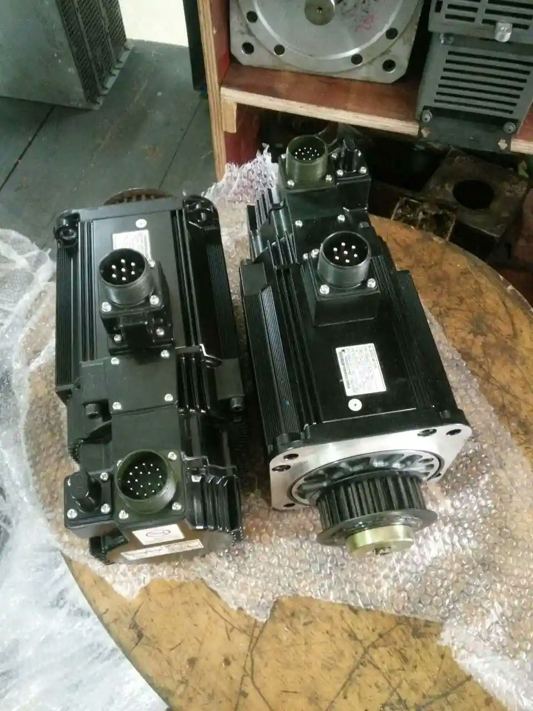
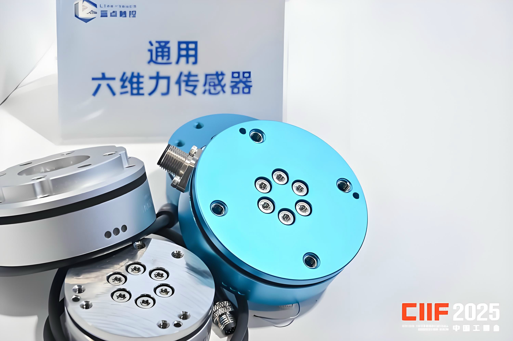
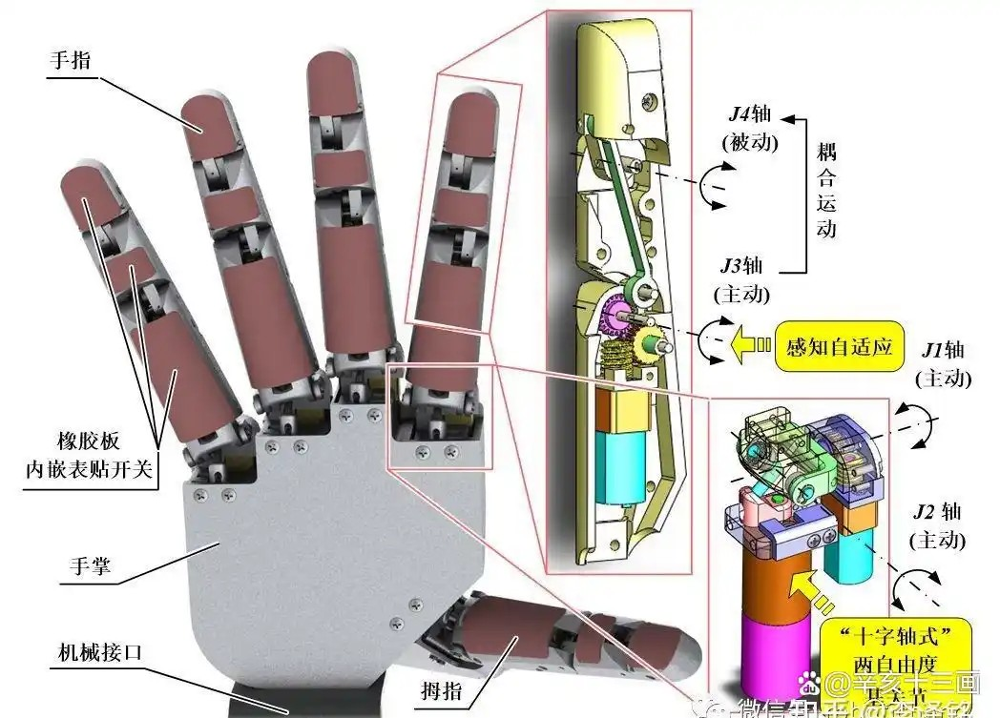
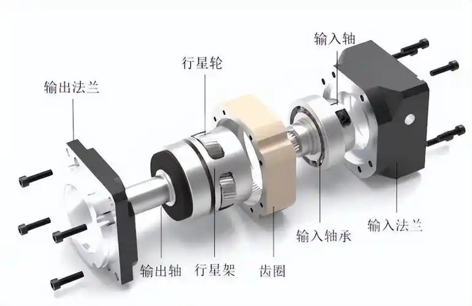
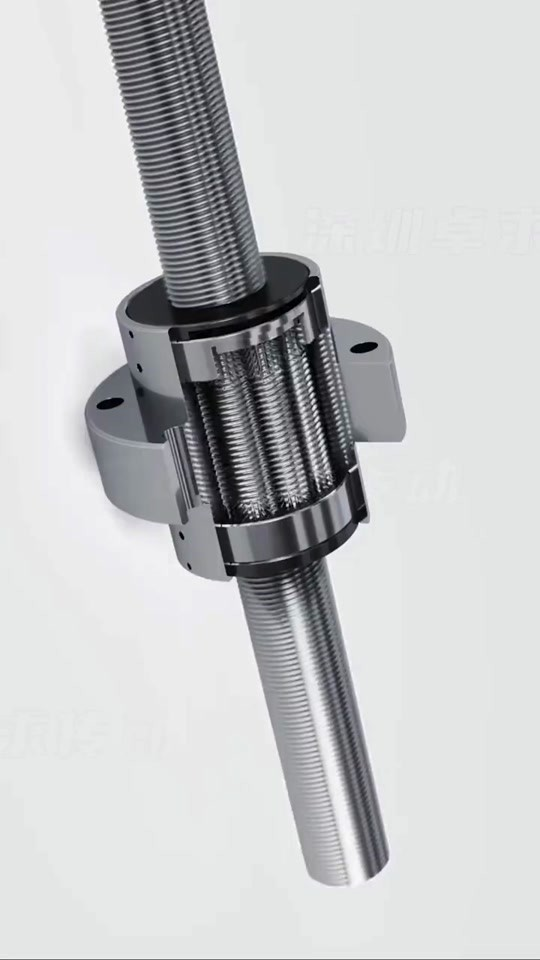
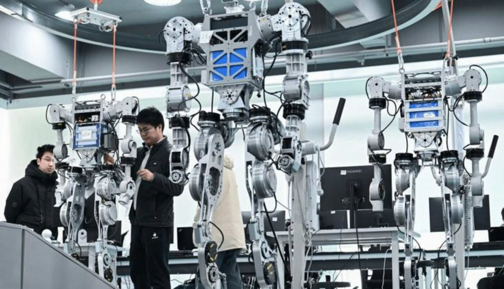
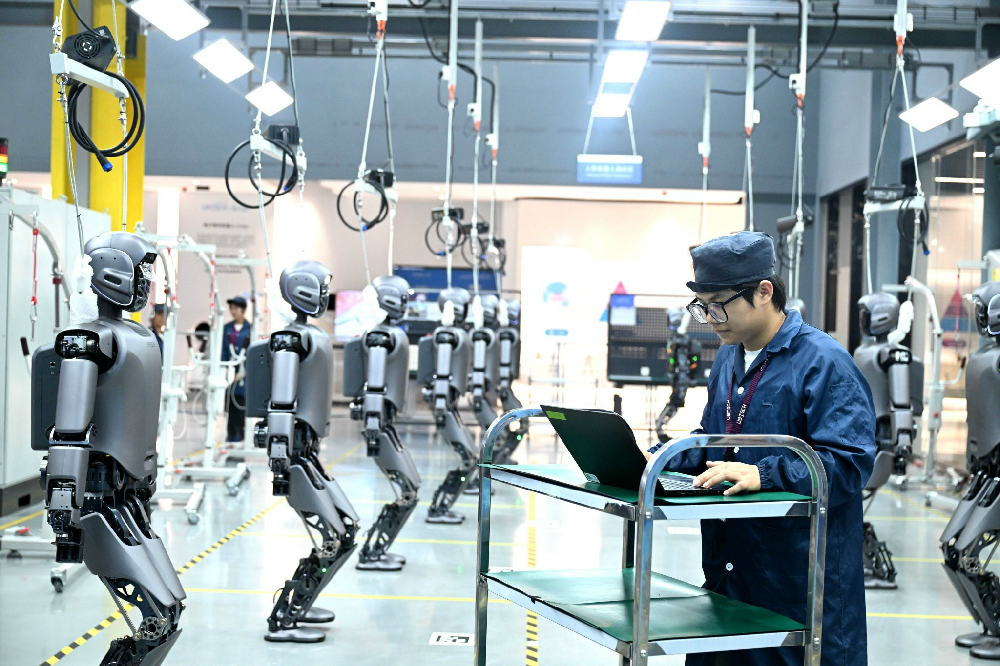

人形机器人三年成本砍掉95%，怎么做到的？
砍完这95%之后，还剩什么卡点没解决？
什么时候能真正量产？
中国和美国，走的是一条路吗？
投资看什么？
我们来一一解答。
宇树科技，三年价格轨迹：59万→26万→16.76万→2.69万。降了95%。
而且不是亏本卖。G1基础款物料成本4.16万，卖8.5万，毛利率40%。正经生意。
为什么能砍这么狠？三个字：供应链。
人形机器人最贵的是关节——旋转关节和线性关节，加起来占整机成本的60%以上。关节里面最贵的三个零件：减速器、伺服电机、力矩传感器。
2022年以前几乎全靠进口。一个谐波减速器五六千，六维力传感器10万起步。

到2026年——
减速器国产化率超过60%。绿的谐波一家，国内市占率超过60%，打破了日本哈默纳科的垄断。
六维力传感器，一年降了60%以上，从2-3万降到5-8千。

单个关节成本，从2400块压到800块。
这些零件大量复用了新能源汽车的成熟供应链。中国电动车产业链全球最卷，产能和技术溢出到人形机器人领域，成本自然断崖式下跌。
一句话：不是机器人变厉害了，是中国供应链太猛了。
成本砍了95%，但别以为问题都解决了。还剩三个硬骨头。
人手有27个自由度、数千个触觉传感器。当前各家方案从6到42个自由度不等，没有收敛方向。更要命的是寿命——灵巧手寿命普遍只有1-3个月，最短的一周就出故障。

工厂买一台机器人回去，手是最先坏的部分。换一只手多少钱？按BofA的数据，灵巧手占整机BOM的19%。宇树G1卖8.5万，一只手大约1.6万。一个月换一次，一年光手就19万。
这是线性关节的核心零件，国产化率不到20%——是当前国产化率最低的核心零部件。减速器已经解决60%了，丝杠还不到20%。


谁在做？恒立液压市占率70%以上，北特科技、五洲新春也在布局。但还没大规模量产。
行业普遍2-4小时。这不是某一家的问题，是物理定律的限制。电池做大了→重量上升→关节负担加重→功耗反扑→需要更大电池。死循环。
固态电池是终极方案，能量密度翻倍到500Wh/kg，但EVTank预测：实现8小时稳定续航至少还要3-5年。
所以现在的局面是：成本下来了，但"能用"这件事，还没完全解决。
不是一条路。

宇树R1双臂版2.69万。特斯拉Optimus Gen 3成本约18万——差了将近7倍。
麦肯锡今年4月的深度拆解：脱离中国供应链，Optimus的BOM从4.6万美元飙到13.1万美元——暴涨近3倍。
不是"中国便宜"这么简单，是"离开中国造不出来"。中国在全球机器人供应链中的份额：永磁体90%、精密轴承40%、电机35%。
2025年全球人形机器人出货1.8万台，中国占了80%-95%。宇树5500台，智元5200台，两家合计占全球80%。
特斯拉用FSD芯片做端到端神经网络，Figure集成OpenAI大模型，1X做订阅模式——买断2万美元+每月499美元。
逻辑是：硬件可以让中国做，但"大脑"必须是美国的。类似智能手机时代——富士康组装，但iOS和Android在美国。
工业机器人零部件全球最强——谐波减速器、RV减速器、伺服电机都是日本的。但整机严重缺位。
TrendForce的分析很精准：日本企业专注"ROI已经充分理解的成熟工业应用"，不愿意冒险投新赛道。工业机器人太赚钱了，人形机器人只是"防御性布局"。
结果就是：零部件有壁垒，整机几乎缺席。
已经在量产了，但远没有到"够用"的阶段。
2025年是量产元年——全球出货1.8万台，中国占80%以上。宇树5500台，智元5200台。
2026年更猛——大摩预测全球5万台以上，同比增长700%。宇树募投7.5万台人形+11.5万台四足。智元从第1000台到第10000台只用了三个月，规划年产能1.5万台。优必选柳州万台产线已落地。小鹏规划5万台。

产能军备竞赛已经打起来了。
但产能不等于能用。GGII蓝皮书的核心判断是："成本不是卡点，能力才是。"硬件方案没收敛前，多数竞争是无效竞争。优必选Walker S2产能利用率只有18%——产线建好了，但订单没跟上。
给一个时间判断：
B端（工厂/物流）——2到3年内可以形成有用部署。理想工况下，投资回收期已经勉强压到2年以内，但真实工况还需要验证。
C端（家庭）——至少5年以上。灵巧手寿命1-3个月、续航2-4小时、具身大模型10步串联成功率只有60%——这些问题没解决之前，买回家就是大号玩具。
一句话：工厂里已经上了，家里还要等。
三条线。
绿的谐波——谐波减速器龙头，国内市占率超60%，人形业务2026年占营收35%。
恒立液压——行星滚柱丝杠市占70%以上，墨西哥工厂年底投产。丝杠国产化率不到20%，是最稀缺的环节，谁先突破谁就是下一个绿的谐波。
双环传动——精密齿轮，和特斯拉头部人形集成商联合研发超过2年。
宇树科技已上市，2025年营收17亿，毛利率60%。是少数已经盈利的整机厂。
国家电网68亿大单。十五五规划硬性指标：每省至少20个运营场景，每家央企至少10个，2026年11月联合评估。
| 指标 | 数值 | 来源 |
|---|---|---|
| 宇树价格轨迹 | 59万→26万→16.76万→2.69万（3年降95%） | 36氪 2026.7.6 |
| 宇树G1 BOM | 4.16万元（关节2.75万），毛利率40% | 界面新闻 2026.7.6 |
| 执行器占BOM | 40%-60% | McKinsey 2026.4 |
| 不用中国供应链BOM | $4.6万→$13.1万（+185%） | McKinsey 2026.4 |
| 谐波减速器国产化率 | ~60% | GGII 2025 |
| 行星滚柱丝杠国产化率 | <20% | GGII 2025 |
| 六维力传感器降价 | 一年降60%+（2-3万→5-8千） | 钛媒体 2026.6.25 |
| 灵巧手占BOM | 19% | BofA 2025.4 |
| 灵巧手寿命 | 1-3个月（最短1周） | 界面新闻 2026.7.6 |
| 行业续航 | 2-4小时 | TrendForce |
| 2025全球出货 | 1.8万台 | IDC |
| 2026全球预测 | 5万+台（+700%） | TrendForce |
| 2030 BOM预测 | $13,000-17,000 | BofA |
| 中国出货占全球 | 80-95% | IDC/TrendForce |
| 优必选U1订单 | 1.3万台（6.30发布会） | 潇湘晨报 2026.7.6 |
三年前，一台人形机器人59万。今天，2.69万。
这不是PPT上的数字，是中国供应链用三年时间实打实干出来的。
成本下来了，但灵巧手、丝杠、续航还在攻关。工厂已经上了，家里还要等。中美走的是两条不同的路——中国拼制造，美国拼AI。
不管谁赢，全球机器人都要用中国的零件。麦肯锡算过：脱离中国供应链，成本暴涨3倍。
这才是真正的壁垒。不是谁的Demo更炫，是谁的供应链不可替代。
数字不会骗人。